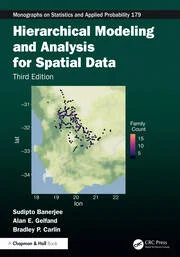
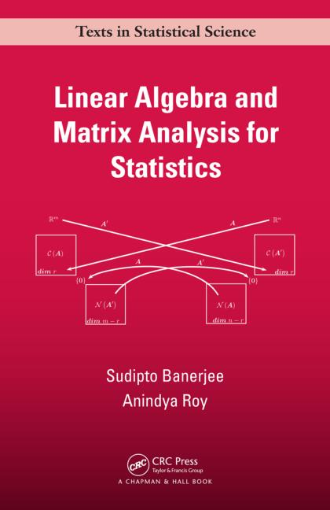

Books and Monographs
Hierarchical Modeling and Analysis for Spatial Data (Third Edition)

The text presents a comprehensive and up-to-date treatment of hierarchical and multilevel modeling for spatial and spatio-temporal data within a Bayesian framework. Over the past decade since the second edition, spatial statistics has evolved significantly driven by an explosion in data availability and advances in Bayesian computation. The third edition reflects those changes, introducing new methods, expanded applications, and enhanced computational resources to support researchers and practitioners across disciplines, including environmental science, ecology, and public health. Visit Publisher
Linear Algebra and Matrix Analysis for Statistics

Linear Algebra and Matrix Analysis for Statistics offers a gradual exposition to linear algebra without sacrificing the rigor of the subject. It presents both the vector space approach and the canonical forms in matrix theory. The book is as self-contained as possible, assuming no prior knowledge of linear algebra. Beginning with the rudimentary mechanics of linear systems, the book gradually develops a formal development of Euclidean vector spaces, rank and inverse of matrices, orthogonality, projections and projectors, eigenvalues, eigenvectors, different matrix decompositions (e.g., LU, Cholesky, QR, spectral, SVD, Jordan), positive definite matrices, Kronecker and Hadamard products, and concludes with accessible treatments of some more specialized topics, such as linear iterative systems, convergence of matrices, Markov chains and Page-Rank algorithms, and more general vector spaces. Visit Publisher
Handbook of Spatial Epidemiology
Handbook of Spatial Epidemiology explains how to model epidemiological problems and improve inference about disease etiology from a geographical perspective. Top epidemiologists, geographers, and statisticians share interdisciplinary viewpoints on analyzing spatial data and space–time variations in disease incidences. These analyses can provide important information that leads to better decision making in public health. Visit Publisher